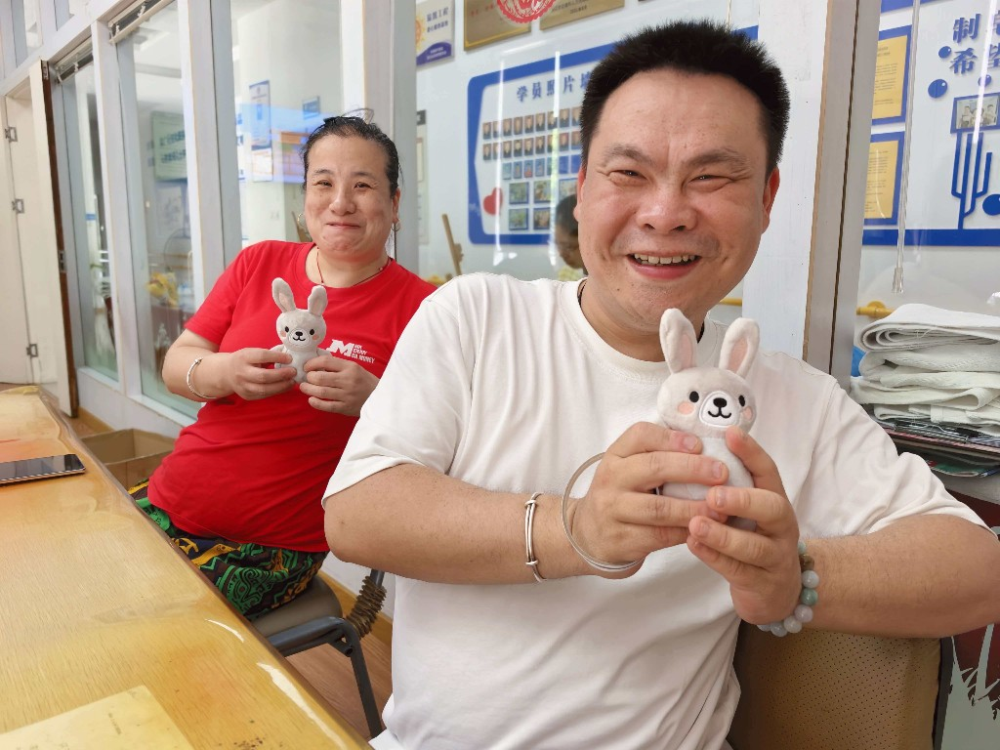

01
Huiling Autism Center
Hangzhou, China
“For some individuals with intellectual disabilities, the use of toys can have a soothing effect during periods of emotional instability, helping to reduce the duration of negative emotional outbursts.”
